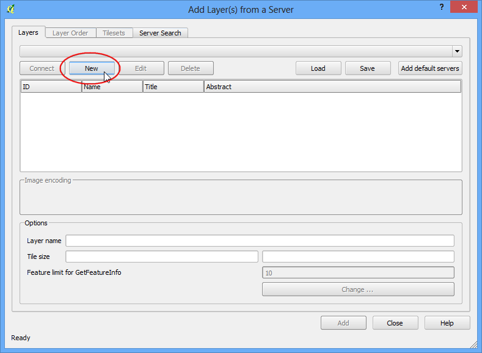

Bekerja dengan data WMS
[ Download PDF A4 Letter ]
Seringkali anda memerlukan layer data referensi untuk peta dasar anda atau untuk menampilkan hasil anda dalam konteks dari dari dataset lain. Banyak organisasi mempublikasikan dataset secara online yang siap pakai di GIS. Sebuah standard popular untuk mempublikasi peta secara online disebut WMS (Web Map Service) . Ini adalah pilihan yang lebih baik untuk menggunakan layer referensi dimana anda mendapat akses ke dataset yang kaya di GIS anda tanpa kesulitan untuk download atau melakukan style pada data.
Prosedur
Buka Qgis dan akses .

Pada tab Layers , klik New.

Beri nama koneksi anda. Ini bukan untuk nama layer anda melainkan nama service yang menyediakan layer WMS. Sebuah service tunggal biasanya mempunya multi layer yang bisa ditambahkan ke dalam proyek. URL yang anda perlukan untuk mengakses layer WMS disebut GetCapabilities . Ketika anda mengakses sebuah server dengan parameter ini di URL, ini akan menghasilkan sebuah daftar layer yang tersedia berikut metadatanya. Dalam kasus ini, nama koneksinya adalah MRDATA USGS dan isi GetCapabilities URL dengan http://mrdata.usgs.gov/services/ca?request=getcapabilities&service=WMS&version=1.1.1& . Klik OK.

Berikutnya, klik tombol Connect untuk menarik daftar layer yang tersedia. Anda akan melihat id-id yang berbeda terdaftar di sebelah layer. ID 0 berarti anda memngambil sebuah peta dengan semua layernya. Jika anda ingin tidak semua lyer, anda dapat menelusuri daftar dengan mengklik ikon + dan memilih layer yang bersangkutan. Pilih layer 0 untuk tutorial ini.

Pada bagian Image encoding , anda perlu untuk memilih sebuah format gambar. Format gambar berdampak sangat besar dan yang mana yang anda pilih bergantung pada kasus anda. Berikut beberapa petunjuk
Kualitas: PNG adalah format gambar tidak terkompress. JPEG adalah formet terkompresi dengan adanya pengurangan kualitas. TIFF bisa menjadi keduanya. Ini berarti kulaitas gambar PNG akan lebih baik dibandingkan dengan JPEG. Jika tujuan utama anda adalah untuk mencetak peta, pakailah PNG.
Kecepatan: Karena gambar PNG tidak terkompress dan berukuran lebih besar, gambar ini akan membutuhkan waktu yang lebih lama untuk dibuka. Jika anda menggunakan layer dalam proyek anda sebagai layer referensi dan memerlukan zoom/pan dengan sering, gunakan JPEG.
Client Support: QGIS mendukung hampir semua format, tetapi jika anda membangun aplikasi berbasis web. browser biasanya tidak mensupport TIFF, jadi anda sebaiknya memilih format lain.
Tipe Data: Jika layer primer anda adalah Vektor, PNG akan memberikan hasil yang lebih baik. Untuk layer citra, JPEG biasanya pilihan yang lebih baik.
Untuk tutorial ini, pilih JPEG untuk formatnya. Pilih Layer name sesuai selera anda dan klik Add.

Anda akan melihat layer yang dibuka di kanvas QGIS. Anda dapat melakukan zoom/pan seperti pada layer lain. Cara WMS Service bekerja adalah setiap anda melakukan zoom/pan, service ini mengirim koordinat viewport ke server dan server membuat sebuah gambar untuk viewport itu dan mengembalikannya ke client. Jadi akan ada penundaan sebelum anda melihat area yang anda zoom. Dan juga, karena data yang anda lihat adalah hanya gambar, tidak memungkinkan melakukan query untuk attribut seperti layer vector/raster pada umumnya.

Walau begitu, anda dapat melihat metadata tentang layer tersebut. Klik kanan pada layer dan pilih Properties.

Anda akan melihat bahwa dialog Properties terlihat berbeda dan memiliki tab yang lebih sedikit. Anda dapat akses tab Metadata untuk mempelajari lebih lanjut tentang WMS Service dan layer.